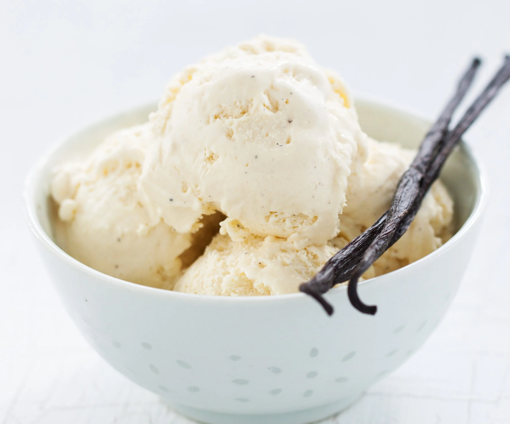

Vanilla Bean Ice Cream

Description
This vanilla bean ice cream is pure, rich, and creamy. Only the good stuff, nothing artificial about it. It's 5-ingredient bliss!
Ingredients
- 1 1/2 cups whole milk
- 1 1/2 cups heavy cream
- 1 whole vanilla bean
- 2 large eggs
- 3 large egg yolks
- 1/2 cup cane sugar
Steps
- Combine milk and cream in medium saucepan. Using sharp knife, split vanilla bean in half, lengthwise. Scrape out all the seeds into the saucepan. Put bean pod in saucepan; there is plenty of flavor left in pod. Bring mixture to slow boil. Reduce heat to simmer 30 minutes. Stir frequently. If you get a little milky film on top, just keep stirring.
- Combine 2 eggs, 3 yolks, and sugar in a medium bowl. Lightly beat until mixture is thick, smooth, and pale yellow. Remove bean pod from milk mixture. Measure out 1 cup of the hot mixture. Gradually pour the cup of milk mixture into the egg mixture in a slow, steady stream while whisking - you can also use a mixer on low speed. When combined, pour egg/milk mixture back into saucepan.
- Stir constantly over low heat until mixture is thick enough to coat spoon. Do not let it boil. If using thermometer, it should be around 170F.
- Transfer to a bowl, cover with plastic wrap directly over custard, and chill completely. Takes at least a few hours chill, so do this overnight if you like.
- Pour chilled custard into ice cream maker and churn until thickened, about 25 min. Transfer to airtight container and place in freezer to set.